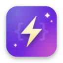

四种语言，一套机制
C、C++、Objective-C、Swift 统一支持：ObjC 方法、Swift 类方法、C/C++ 自由函数都能替换，后者通过 GOT 重绑覆盖。
CC++Objective-CSwiftSwiftUI
iOS / macOS 热重载 · C · C++ · Objective-C · Swift
NoCompile 只重新编译你刚改动的那一个文件，链接成 dylib 注入正在运行的 App，把新实现换上去。不用停 App，也不用等整个工程重新编译。
演示动画。示例工程实测：单个 Swift / Objective-C / C 文件保存后 0.3～0.8 秒生效，整个过程通常在 1～3 秒内完成。
01 · 原理
Mac 端监听文件变化，只重编改动的文件；App 进程内的客户端收到 dylib 后完成替换。模拟器与 macOS 走本机 TCP，真机走 USB（usbmuxd）。
class_replaceMethodObjective-C 方法替换vtableSwift 类的虚函数表覆写GOT rebindC / C++ 自由函数与符号重绑02 · 特性
C、C++、Objective-C、Swift 统一支持：ObjC 方法、Swift 类方法、C/C++ 自由函数都能替换，后者通过 GOT 重绑覆盖。
解析构建日志拿到 driver 命令，再交给官方 swiftc -### 展开单文件命令。参数由编译器自己生成，Xcode 升级自动跟随。
FSEvents 自动触发，无需按快捷键。漏检时点「检查改动」或按全局快捷键 ⌃⌥⌘R 补上。
以 usbmuxd 为主通道连接真机，不依赖局域网广播；从构建日志自动提取签名身份。
storyboard、xib、图片保存即生效（含真机）；运行中新建的源文件也能注入。
业务类不必实现 injected()。已打开的页面退出重进即可看到，也可开启自动重建；SwiftUI 配合 @ObserveInjection 监听注入通知自动重绘。
登记新旧类的等价关系，注入后 isKindOfClass: 与 as? 照常工作。
全程用参数数组调用子进程，不拼接 shell 字符串，工程放在任何目录都能用。
增删存储属性、调换 Swift 方法顺序、SwiftUI 视图结构变化会改变内存布局。NoCompile 检测到后不替换该类，并在日志与 App 浮层提示重新运行；同文件里其他类和函数照常生效。SwiftUI 在 body 末尾加 .enableInjection() 即可热重载结构改动。
03 · 控制台
左侧是已连接的 App 与最近的注入记录（成功 / 失败数、平均耗时），右侧是按类别着色、可筛选搜索的日志。编译失败时右键即可在 Xcode 中定位到出错行；遇到问题可一键导出诊断包。
04 · 接入
客户端 SDK 就在本仓库，零第三方依赖，支持 iOS / tvOS 15+ 与 macOS 12+。
Build Settings → Other Linker Flags，只给 Debug 填写。它让 App 内部的函数调用走 GOT 间接寻址，运行时才能重定向到新实现。CocoaPods 方式会自动加上。
-Xlinker -interposable以下方式都支持真机，镜像加载或 load() 时自动启动，无需写启动代码。
Xcode：File → Add Package Dependencies，填入下面的地址，把 NoCompile 库加到 App target。
https://github.com/wangwanjie/NoCompile或写进 Package.swift：
.package(url: "https://github.com/wangwanjie/NoCompile", from: "0.2.13"),
// target 的 dependencies
.product(name: "NoCompile", package: "NoCompile")Debug 的 Other Linker Flags 再加 -ObjC，确保客户端的类被完整链接。模块名为 NoCompileClient。
在 Podfile 里只给 Debug 配置引入，然后 pod install：
pod 'NoCompile', :configurations => ['Debug']Pod 会自动给 Debug 合并 -Xlinker -interposable，Release 不受影响。其他调试配置名（如 Dev）用 project 'App', 'Dev' => :debug 声明。
Cartfile 加一行，然后构建 xcframework：
github "wangwanjie/NoCompile"carthage update NoCompile --use-xcframeworks把 Carthage/Build/NoCompile.xcframework 以 Embed & Sign 加到 App target，再给 Release 等非调试配置设置排除：
EXCLUDED_SOURCE_FILE_NAMES = NoCompile.xcframework NoCompile.framework不引入任何依赖：App target 的 Build Phases 末尾加一个 Run Script，它会把对应平台的 bundle 拷进 App 并重签（默认只在 Debug 配置生效）：
"/Applications/NoCompile.app/Contents/Resources/nocompile_copy_bundle.sh"在启动尽早的位置加载，模拟器与真机写法相同：
#if DEBUG
if let path = Bundle.main.path(forResource: "NoCompile", ofType: "bundle") {
Bundle(path: path)?.load()
}
#endif也可以在工程目录运行 nocompile_setup.py 自动完成以上接入，切分支前用 --remove 原样撤销。
在 Xcode 完整构建过一次后，点菜单栏 ⚡ → 选择工程，再 ⌘R 运行 App。之后编辑任意源文件并保存即可。

按芯片选择安装包，拖入「应用程序」即可。安装包已经过 Apple 公证，之后通过 Sparkle 自动更新，只接收同架构的更新。
不确定芯片类型：苹果菜单 → 关于本机，「芯片」显示 Apple M 系列选 arm64，显示 Intel 选 x86_64。每个版本附带 SHA256SUMS.txt 供核对。